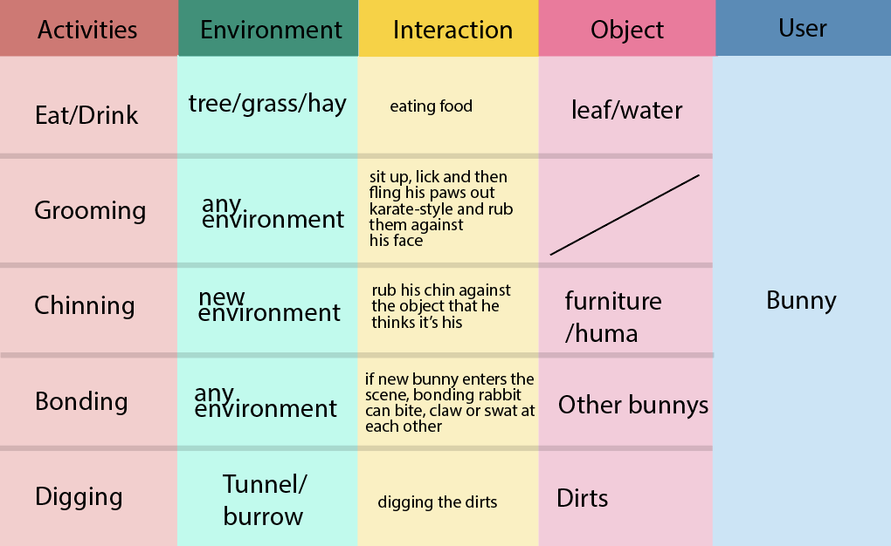
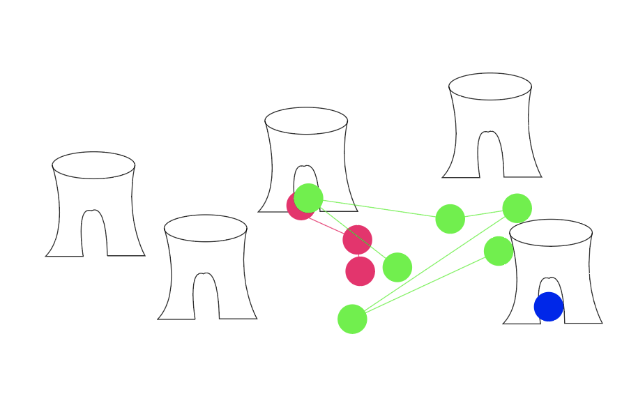
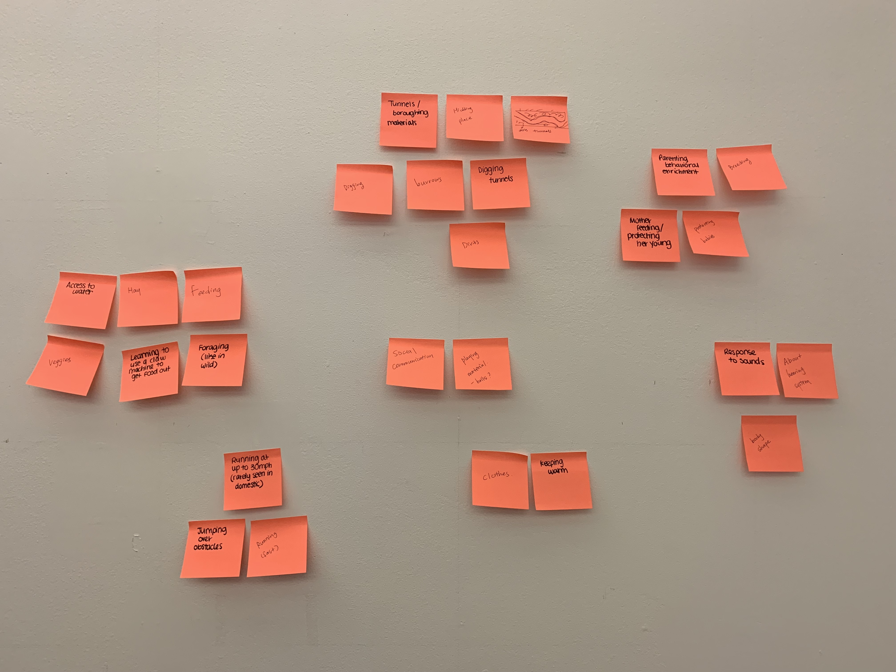

Assignment: Midterm idea brainstorm and sketch
In the past few days, Mariah and I did research on rabbit. We found that domestic and wild rabbit are actually different species with different genes. Wild rabbits have slimier body, longer leg and can run faster than domestic rabbits. And since they need to hide from their predator, they usually need to dig burrow, which domestic rabbits do not often do. Hence, we decided to create an enrichment to encourage rabbit digging.
AEIOU
Behavior Mapping
Brainstorming


Midterm idea
We found that rabbit has super strong sense of smell. They have nearly 360° panoramic vision, allowing them to detect predators from all directions; they can see everything behind them and only have a small blind-spot in front of their nose. Hence we want to use their amazing sense of smell to attract them to dig!